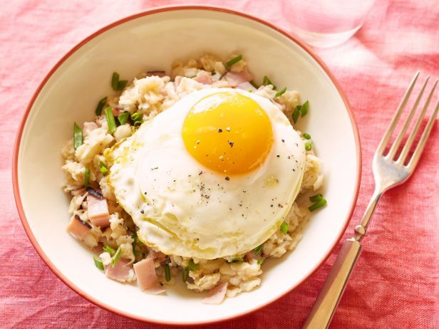

Breakfast
Ingredients
- 1/4 cup dry quick-cooking steel cut oats
- 3/4 cup water
- salt and pepper
- 2 TBS (15g) shredded white cheddar cheese (add more if you like)
- 1 tsp coconut oil, divided
- 1/4 cup diced red peppers
- 2 TBS finely chopped onions
- 1 large egg
- Optional Toppings
- chopped walnuts
- sliced green onions
- za'atar (or any other spice blend)
Instructions
Stove Top Method: Bring water to boil. Add oatmeal, reduce heat a little and let it cook for about 3 minutes, until all liquid is absorbed.
Turn off heat and stir in cheese, a small pinch of salt, and pepper.
Microwave Method: Place oats and water in a microwave-safe bowl. Line microwave dish with paper towels to catch any spills.
Microwave at a high setting (but not the highest, about 8/10 power setting) at one-minute intervals for a total of 3 minutes.
If you want a softer texture, continue microwaving at 30-second intervals. Give the oats a little stir between intervals.
When the oatmeal is done, stir in shredded cheese, a small pinch of salt, and pepper.
Heat a non-stick pan with 1/2 teaspoon of coconut oil over medium-high heat. Add vegetables and cook for 2 to 3 minutes,
until they soften. Spoon vegetables over cooked oats. Reduce heat to medium.
Add remaining 1/2 teaspoon of oil and fry egg. Cook until the whites are no longer translucent and serve over oatmeal.
Top with chopped walnuts, green onions, and za'atar, if you like.